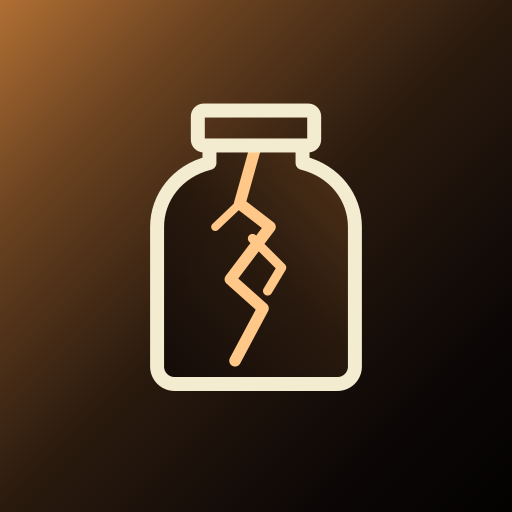

A Jar Is Not a Vault: Reading My Friend's Lightning Wallet Before I Recommend It
SEPTEMBER 10, 2026

If you asked me today which Lightning wallet I'd point you to, my honest answer would be this one, and my honest reason would be that I know the man who built it and I trust him. That is a perfectly good reason for me. It is a terrible reason for you. You don't know him, you can't call him, and "a guy I know vouches for it" is how most people end up holding a bag. So rather than recommend it, I did what I'd want someone to do before recommending anything to me that holds money: I sat down with the three public repositories behind it and read them — the wallet, the standard it speaks, and the server software a node operator runs to serve it. This is what I found, the good and the not-yet, and at the end a plain answer to the only question that matters, which is not "is it good" but "what should you put in it."
Two disclosures first, since the whole point of this entry is that you shouldn't have to take my word for things. The author is a friend; he publishes as Plotzwerks and signs his own design notes "DP." And the wallet has been sitting on my phone's home screen for a little while now, installed and unused, which is its own small confession: I'm writing this before I've moved a sat through it, not after, precisely so that what follows is about the code and not about how the buttons felt.
What It Actually Is
Lightning in a Jar — LiJ, to its author — is a Bitcoin wallet that runs in your web browser. Not an app you download from a store: a web page you open, then add to your home screen, after which it behaves like an app and works offline in a read-only sort of way. Underneath the page is a real Lightning node, the Lightning Development Kit written in Rust and compiled to WebAssembly so it can run inside a browser tab. On-chain funds sit at ordinary addresses. Lightning funds sit in a channel the wallet itself holds with a Lightning service provider — an always-on node that opens your channel the moment your first payment arrives, and holds incoming payments for you while your phone is asleep. There is no side-chain and no shared-custody construction of the Spark or Ark variety, which the landing page says in as many words; it's "pure Lightning, real bitcoin," and the same twelve words that back the Lightning side back the on-chain side. Take those words to any ordinary Bitcoin wallet and your on-chain coins are simply there.
The part that's genuinely new is the piece he calls LIJOX: an open, permissionless registry of those service providers. Any node operator can run his adapter software beside their existing LND node, sign a registration with the node's own key, and appear on the list; wallets read the list, pick a provider, and can switch to another. The registry is deliberately nothing more than a signed list — "a registry is a list; nothing in the protocol makes one registry more official than another," his README says — and the standard is written so that a wallet is never captive to the company that made it. That is a real idea, and a good one. Phoenix, the wallet most people get pointed to, is welded to its maker's node; here the maker's node is just the first entry on a list anyone can join.
Some pedigree, because it matters: the engine began as a fork of Mutiny Wallet's node — a serious, well-regarded browser-and-mobile Lightning wallet whose team announced in August 2024 that it was shutting down by year's end, citing how hard self-custodial Lightning on a phone had turned out to be. Its code was MIT-licensed, and it's still there in this wallet's license file. So the lineage is both a credential and a warning in the same sentence: this is built on the bones of a project that a funded team decided was too hard to keep alive, and it is being kept alive by one person.
![Diagram of who holds what: your phone holds the twelve words, the channel state and the payment secrets, under a passphrase lock, and none of it leaves. The LSP is the other side of your channel, opens it on your first payment in, holds a payment while you sleep under a lock only your phone opens, and closes a silent channel after sixty days — it sees the amounts but cannot redirect a sat. A registry is a signed list of LSPs; a backup host stores a sealed blob it cannot read. A dashed line around the LSP, registry and backup host notes that today all of them are run by the same one person.](img/lij-who-holds-what.svg)
What I Could Actually Check, and Did
The standing objection to any wallet that lives in a browser is that a website can serve
you different code tomorrow. His README raises this objection against his own product before
I could, and then lists what stands against it: every release's build is done by a public CI
workflow from the public source; the hashes of the engine binary, its JavaScript glue and the
service worker are published in a
release
table; and the recipe for comparing what your browser loads against that table is written
out, three curl commands long. So I ran them. On September 10th the engine served
from lightninginajar.xyz hashed to 84ffa33b…678e, the glue to
697c6328…72bf, the service worker to b4a87e96…b590 — and all three
matched, byte for byte, both the files committed in the repository and the row for page v712 /
engine v240 in that table. Even the wallet page itself, which the docs warn will differ by one
line Cloudflare injects, came back identical to the repository copy. That's a small check. It's
also more than most wallets let you do at all, and it turned a claim into a fact.
The second thing browser wallets get rightly beaten up about is that a malicious browser
extension, or anyone with your unlocked laptop, can read what a web page stores. Here the twelve
words never sit in storage in the clear: they're sealed under a passphrase you choose, stretched
through Argon2id at 48 megabytes and three passes and then encrypted with AES-256-GCM — the
engine code says so and the comments say why, including a plain note that this is "a local
convenience lock, independent of Bitcoin key material," not a thirteenth seed word, and that
forgetting it costs you nothing the twelve words can't recover. The wallet page's security
headers are the strict kind: scripts run only from the site's own origin and only if their hash
is on a list, with no inline handlers at all. I counted — there are zero onclick
attributes in a 25,000-line page, which is a refactor somebody sat through on purpose.
Then there's the part of the code I'd have been most nervous about, and it turned out to be the part best documented. He doesn't run stock LDK. He runs LDK version 0.0.123 with a patch set — ten files, 229 lines added, 29 removed — and every one of those hunks sits in a single document with the reason for it stated above the diff, and an explicit list of the files that are byte-identical to upstream "for the avoidance of doubt." Most of it is boring in the best way: substituting a browser clock where WebAssembly has no system clock, read-only accessors so the wallet can export an escape kit. One hunk is a genuine bug he hit in production and wrote up honestly: on September 3rd a plain restart of the app broadcast a force-close over a cooperative close that was still waiting in the mempool, on a real channel, and the fix — a boot-time hold — carries the date and the channel it happened to. Commitment, revocation, HTLC and penalty logic, the parts of a Lightning node where the money actually lives, are upstream's, untouched. I read the diff. I believe the summary.
The engine is about 29,000 lines of Rust with 190 unit tests that CI runs on every push; the
build went green again the day before I wrote this after a vendoring fix. The design records
in the docs/ folder are unusually candid — they read as working notes between him
and an AI assistant, dated by session, with rulings and reversals left in rather than tidied
away — and they include one I'd hold up as a model: a
known-findings
file on the server side that records, with dates, defects found in the field. The one that
stopped me: the day after the repositories went public he noticed that the "lease" — the timer that
force-closes a silent wallet's channel after sixty days — was walking every channel on
his node, exchange peers and routing peers included, and would have closed any of them that
went quiet for two months once the dry run was switched off. It hadn't been switched off. He
caught it reading the code before flipping the switch, and now the lease refuses to close
anything until the operator has saved an explicit exclusion list at least once — "an unset
list is not consent." That is the temperament you want in someone who holds the other side of
your channel.
The adapter itself — the software a node runner installs — is worth a paragraph, because it answers the question a skeptic should ask about any "service provider": what can it do to the node it runs beside? The answer is written down as a least-privilege permission recipe the operator bakes themselves: it can open channels from the node's funds (that's the job), create and settle the special hold invoices behind offline receiving, and intercept forwards addressed to its wallets. It cannot send the node's on-chain coins anywhere or read the seed, and it only gains the ability to pay invoices if the operator switches on an optional module and bakes that permission in. Nothing phones home, no registry is contacted unless the operator sets one, and his own definition of done for the adapter is that an operator he has never met should get from clone to serving a wallet in under an hour with no help from him. I didn't try that part. I read it.
What Worried Me
I'll take these in the order I'd want them fixed.
The Lightning library is two years old. LDK 0.0.123 shipped on May 8th, 2024. Since then the LDK project has published, by my count in its own changelog, at least eight releases with a "Security" section, several of which LDK itself describes as fixing funds-theft or funds-loss bugs — a bad on-chain claim after a force-close that could generate invalid transactions and lose money (0.1.6, October 2025), a counterparty overdrawing its reserve through near-dust payments (0.1.5), a reserve-to-zero trick that could leave a node with no valid transaction to broadcast (0.1.4), and this August a batch that includes an on-chain theft against forwarding nodes and several ways to crash a node with a crafted message. Now, fairness: most of those are aimed at nodes that forward payments or that fund channels to strangers, and this wallet does neither — it's a leaf, its channels are funded by the provider, and its one counterparty is a node its author runs. So the exposed surface is narrower than the list suggests. But whether each of those fixes reaches into this wallet's particular shape is a question nobody has answered, because nobody has checked, and "probably not" is not a security posture. His own patch comments say "reapply on LDK bump," so the bump is contemplated. It is the single thing I'd most want done before I moved more than jar money through it.
No audit, no outside eyes, and it has been public for three days. The
repositories went public on September 7th. As I write, the wallet's repository has zero stars,
zero forks, one contributor, and about 1,700 private commits since March that were not
published. The CONTRIBUTING.md says outright that the most valuable thing an outside
reader could do is review the LDK patch set, "which has had no independent review yet." I
reviewed it in the sense that I read it and it made sense to me, which is a lower bar than the
one he's asking for. There is no bug bounty; there's a private disclosure channel and a promise
of an acknowledgement within four days. When I wrote about
Ibis yesterday I said a seven-month-old wallet with
sixty-odd stars hadn't yet earned the years of adversarial attention that make "no known
incidents" mean much. This one has had three days.
One operator is nearly every counterparty. The registry is live and I pulled it: two providers listed, both his. The chain-data endpoint and the backup host are his too. His README says this in its second paragraph, and it says correctly that it's a single point of failure for liveness and not for custody — if all of it went dark, the money would still come home, as the next section shows. But it does mean that today, "providers compete for your business" is a sentence about the protocol and not about your options, and that one man's power bill, ISP and ability to keep an LND node upgraded stand between you and your next payment going through.
There is no watchtower yet. This is the standard trust assumption of nearly every phone Lightning wallet and I don't want to make it sound unique, but it's worth saying out loud. In Lightning, the party on the other end of your channel could try to cheat by broadcasting an old balance while you're offline; your defense is to come back online within a window measured in days and punish it. A watchtower is someone who watches for you while you sleep. Here there isn't one, and the only party in a position to cheat you is the provider — which is why his own design note calls a tower run by your own provider "the fox guarding the henhouse" and proposes that every provider on the standard run a tower for wallets held with other providers. That's the right design. It's also marked "ruled, not yet built." Until then, the honest statement is that you are trusting your provider not to cheat, which today means trusting him, which for me is fine and for you is the question this whole entry is about.
Browser storage is fragile and the origin is the root of trust. iOS can evict a web app's storage when it feels like it; "clear browsing data" wipes it. The wallet counters this with an encrypted channel-state backup pushed to his host after every change, a downloadable backup file, and a setting that pins the build you're running so the site can't swap the code under you without a prompt. All of that helps against accidents and against a compromised deploy you'd have a chance to notice. None of it helps against a hostile origin — his own spec says so: "the origin is the root of trust of any web wallet. Say so." So the trust model is, in the end, his Cloudflare account, and the hash table exists so that you can at least catch it if that ever changes.
The landing page outruns the README. The front page says "No one watching" and "Surveillance free." The README says one operator runs nearly everything. Both are true in their own frame — nobody is collecting an account or an identity — but a Lightning provider necessarily sees the amount of every payment that crosses the channel it holds with you, and right now that provider is a single, named person. I'd trust the README's tone over the homepage's, and I'd like the homepage to catch up.
What Happens If — the Part I Found Most Reassuring
![Three rows. With the twelve words plus the channel-state backup you get everything back and the channels stay open, in minutes — the only path that keeps the channels. With the twelve words and nothing else you get all the money back but the channels close: the LSP closes them and your side lands at your own address after about one confirmation. With nothing at all for sixty days, the timer closes the channels for you and the money waits at that same address for the words, however long that takes. Footer: the words always recover the money; only the backup recovers the channels.](img/lij-recovery-ladder.svg)
Here is where reading the design records paid off, because the thing I'd most want from a Lightning wallet built by one person is a clear answer to "what if he's hit by a bus," and this one has the clearest I've seen. The principle he writes down is that recovery isn't finished when your money is merely safe at your keys; it's finished when the money sits where any ordinary wallet, holding only the twelve words, can see and spend it — no provider, no LiJ, no sweeping software in the way. And the code commits to that at the moment a channel opens: the address a cooperative close pays to is pinned, up front, to a fresh standard address on the seed's ordinary tree — no sweep, no software, just a coin sitting where any wallet would look. A force-close by the provider pays an output only your key can spend, with no delay clause on your side (the delay binds whoever broadcasts), and the wallet — or any wallet that speaks the standard, restored from the words — collects it to that same plain address in about a confirmation. The sixty-day lease timer, if you simply never come back, is that same force-close, run for you. (He has gone one step further in the design and pinned even the force-close output to a plain address, but that needs a channel type today's zero-confirmation channels don't use — one of a few places where the design records run ahead of the deployed code.) And if everything — provider, registry, backup host — is gone, there's an "escape kit": a pre-signed close-and-collect you can export while things still work and broadcast from anywhere later, with the plain limitation written on the card that it's only as fresh as the last state your device signed.
What you lose without the backup is the channels, never the money. Lose your phone with the backup on and you're back in minutes, channels intact. Lose it with only the words and you get every sat on-chain within the hour, then pay to open a channel again. Lose everything and forget about it for a decade and the coins are waiting at an address the words produce. None of that requires him to be alive, honest or solvent. It requires the Bitcoin network and twelve words. That is the bar, and it's met on paper and in code; what it hasn't had yet is a stranger walking each rung and reporting back.
The Fee, and the Thing My Friend Calls a Promo
When I pulled the registry, the main provider was advertising a channel-open fee of 100 sats — the adapter's default floor is 100 sats or one hundredth of a percent of the payment, whichever is more — and a routing fee of 0.1 percent with no base charge, with channels capped at two million sats. He describes the 100 as an introductory rate, and whether it stays that way is his call, so treat the number as a September 2026 snapshot rather than a promise. For scale: Phoenix, the wallet you're usually told to start with, charges 1,000 sats to create your first channel and then one percent plus mining costs every time it has to add room to receive, and 0.4 percent plus four sats to send, against 0.1 percent here. A hundred sats does not cover the on-chain transaction his node has to pay to open your channel; he is, for now, eating that to get people through the door. There's also a 400-sat reserve the wallet pre-funds at open, which the receive screen tells you about in plain words and which comes back to you when the channel closes. The disclosure copy on that screen — "requesting R, plus F channel-open fee, plus 400 reserve (yours, leaves with you at close), invoice total T" — is the kind of arithmetic most wallets hide, and I'd like every wallet to show it.
If you're a node runner, the more interesting number is the one that isn't on the list yet: a third provider. The adapter is open, the install is documented, and the single-operator problem I flagged above is not a bug he can fix alone — it is fixed by the second person who registers. He'd take that over a star on GitHub, I suspect, and it's the one thing a reader of this entry could do that would move the risk more than anything I could write.
A Jar Is Not a Vault
![Two containers side by side. A large safe labelled the vault: cold storage — a hardware wallet or a multisig, keys that never touch the internet, your savings, the vast majority of what you hold. A small jar with a lightning bolt inside labelled the jar on the counter: a Lightning wallet, any of them — keys on a phone or in a browser, spending money, what you'd carry in a wallet, an amount that wouldn't change your week. An arrow between them: refill the jar from the vault, a little at a time, as you spend it. Footer: nobody keeps their life savings in a jar on the kitchen counter. Not because jars are bad — because that isn't what a jar is for. This is true of every Lightning wallet ever made, the ones with audits included.](img/lij-jar-is-not-a-vault.svg)
Everything above is about this wallet. This part is about every Lightning wallet, and I'd put it in front of anyone installing their first one regardless of whose it is. A Lightning wallet is a hot wallet: its keys live on a device that is connected to the internet, because it has to be — it's signing transactions in real time, at a counter, while you stand there. That is what makes it useful. It is also what makes it the wrong place for savings. Cold storage means the opposite: keys on something that never touches a network, a hardware device or a multisig arrangement like the ones I described when I wrote about splitting my own key. The two aren't competing products. They're a vault and a jar, and the question is never which one is better but which one this particular money belongs in.
Lightning adds its own reasons to keep the jar small on top of the ordinary hot-wallet ones. Channels have to be backed up separately from the seed, as the ladder above shows. A force-close costs an on-chain fee and takes time. Your provider is a counterparty you're trusting for liveness and, absent a watchtower, for honesty. The wallet has to come online periodically to stay safe. And a browser wallet piles on the two I've already covered — storage that can be evicted, and an origin that could, in principle, serve you something else. Every one of those is a survivable failure for the amount you'd carry in a physical wallet. Every one of them is a catastrophe for the amount you'd keep in a bank. So the rule I'd offer is the one his own README lands on in its last paragraph: fund it with an amount whose loss you accept while that is so. Then, concretely, for this wallet: write the twelve words down on paper before you receive a sat; leave the encrypted cloud backup on and also save the backup file somewhere that isn't the same phone; set the build to "Ask me" under Updates so nothing changes under you silently; open it now and then, since a wallet that never wakes can't defend itself; and refill the jar from the vault, a little at a time, as you spend it — never the other way round.
Would I use it? Yes — as a jar, with jar money, and I intend to. Nothing I found in three repositories and an afternoon of reading looked careless; the opposite, actually. The recovery design is the clearest I've seen from a small project, the served code matches the published hashes, the seed is sealed properly, the patches are explained line by line, and the man writes down his own mistakes with dates on them.
Would I recommend it to a stranger? Not yet — and not because of anything I found wrong, but because of what hasn't happened yet. It's three days old in public with one pair of eyes on it, it sits on a Lightning library two years and eight security releases behind, and every counterparty on the map is one person. Three things would change my answer: an LDK catch-up, so the security releases since May 2024 are behind it rather than ahead of it; one outside reader of the patch set who isn't his friend; and a second operator on the registry who isn't him. None of those is a rewrite. All of them are the difference between a wallet I'll trust because I know the guy and one you could trust without knowing anyone.
What stays with me is how much of this review he'd already written himself — in the README that raises every objection I had before I could raise it, in a findings file that records the bug that didn't happen, in a recovery document whose governing principle is that his own software must not be needed to get your money back. I've read a lot of wallet marketing this year. This is the first project where the most cautious sentence about it came from its author. That doesn't make it safe. It makes it the kind of thing that could become safe, which is rarer, and it's why I'm happy to put a jar's worth in and see.